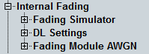

Internal Fading
This branch of the configuration tree is only visible if one of fading scenarios is selected and the fading source is set to "Internal". For multi-carrier scenarios, all parameters described below are available per carrier.
For general prerequisites/required options and background information, see "Internal Fading".

Internal fading settings